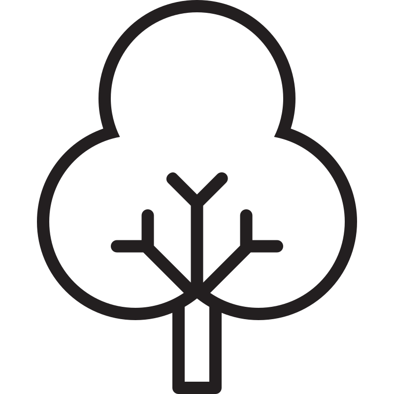

Por que Reciclar?

Benefício Ambiental
Reduz a poluição, preserva recursos naturais e diminui a emissão de gases de efeito estufa.

Benefício Econômico
Gera empregos e impulsiona a economia circular, transformando resíduos em novas matérias-primas.

Benefício Social
Promove a conscientização e a colaboração em comunidades, construindo um futuro mais limpo para todos.
Como Reciclar?
Passo 1: Separar
Separe os materiais por tipo: plástico, papel, vidro e metal. Use lixeiras diferentes para facilitar.
Passo 2: Limpar
Enxágue as embalagens para remover resíduos de alimentos. Isso evita o mau cheiro e pragas.
Passo 3: Coletar
Leve os materiais separados a um ponto de coleta ou aguarde a coleta seletiva na sua região.
O que Reciclar?
- Plástico
- Papel
- Vidro
- Metal